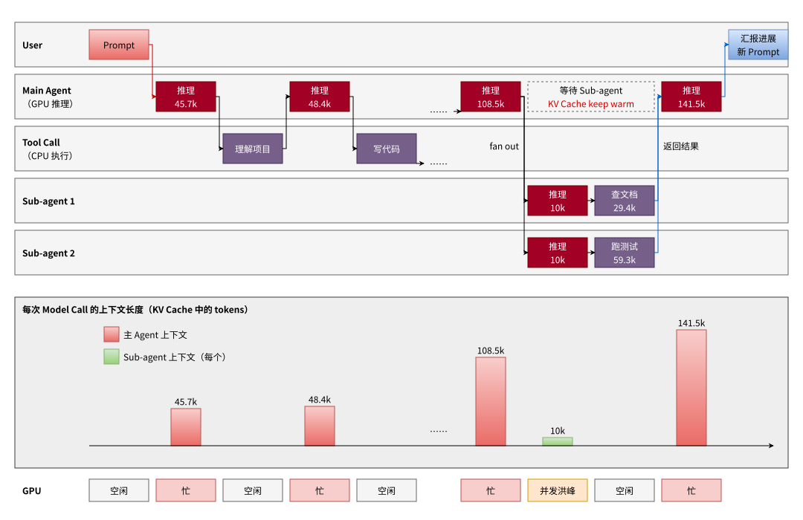
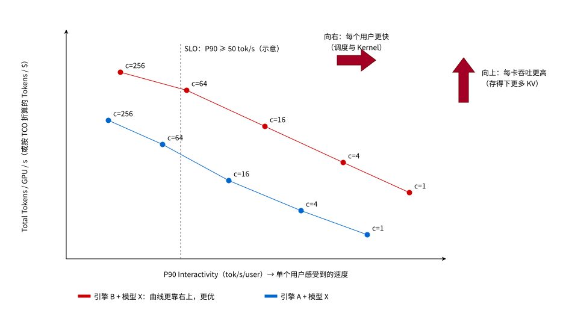
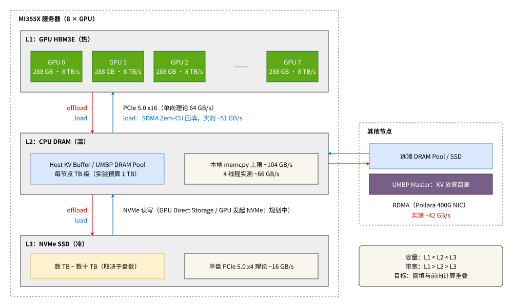
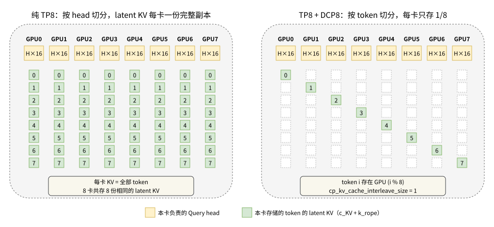
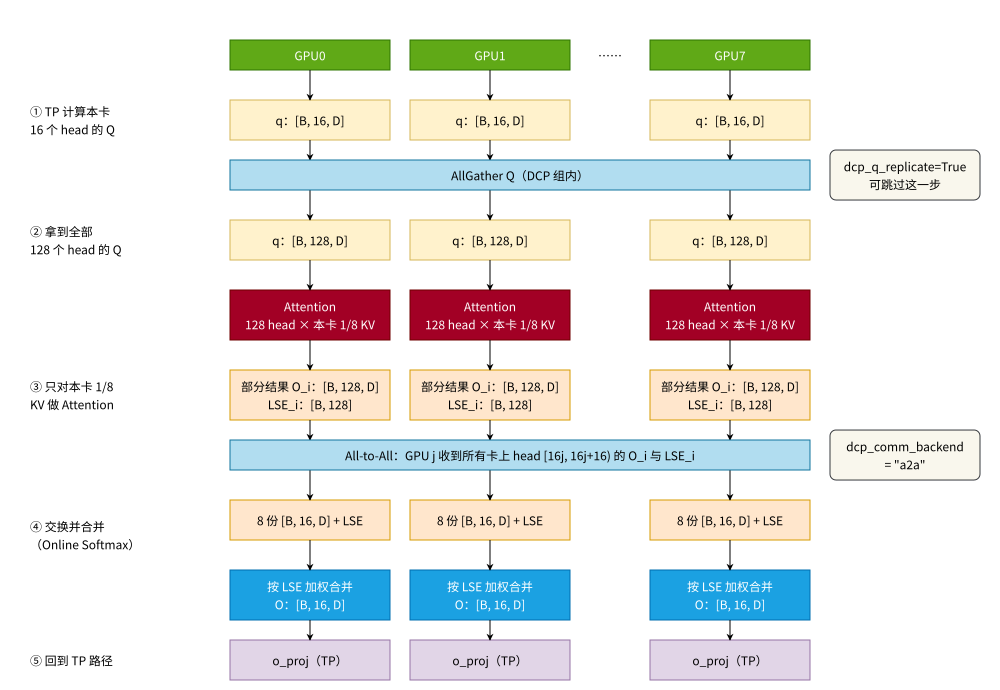
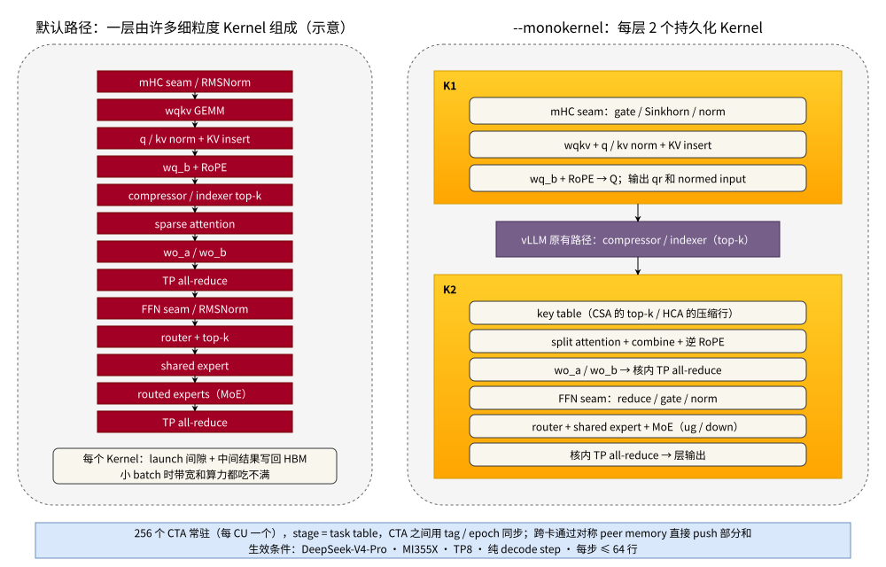
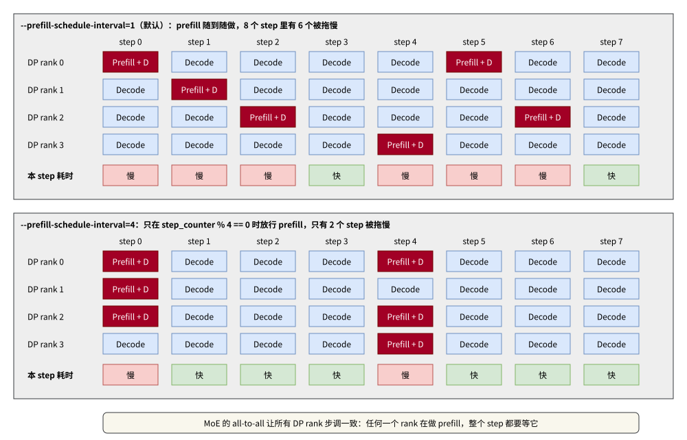

一、引言 #
以 Claude Code、Codex 为代表的 Coding Agent 正在成为大模型推理最主要的流量来源之一。和传统的 Chat 不同，一个 Agent 任务往往要经过几十轮“模型推理 → 工具调用 → 再推理”的循环，上下文随轮数不断累积，中途还会派生出多个 Sub-agent 并行干活。这种负载（下文统称 Agentic Workload）把推理引擎的瓶颈从“算得快不快”推向了“KV Cache 存不存得下、复用得了多少”，以及“忽高忽低的流量下调度稳不稳”。
今年 vLLM 社区围绕 Agentic Workload 做了大量工作，并在 SemiAnalysis 的 InferenceX AgentX 榜单上做了系统性的验证。本文将先拆解一个 Agent 任务的执行过程，总结这类负载的特点和挑战；然后介绍如何用 AgentX 评估推理引擎在 Agentic 场景下的表现；最后从显存、计算和调度三个方面，介绍 vLLM 中几项有代表性的优化：KV Offloading（以 AMD 的 UMBP 为例）、DCP（Decode Context Parallelism）、Mono Decode Kernel 和 --prefill-schedule-interval。
Note：本文涉及的 vLLM 实现基于
main分支 Commit5cae6fd0c9（2026/10/30）。这些特性大多仍在快速演进，具体参数和行为请以最新代码为准。
二、什么是 Agentic Workload？ #
2.1 一个 Agent 任务是怎么执行的？ #
🌰 举个例子：
用户在 Coding Agent 中输入“帮我实现 XXX 功能”，接下来会发生这些事情：
- 用户输入一个 Prompt；
- Model Call：LLM 执行推理，此时上下文约 45.7k Tokens（System Prompt、工具定义、用户输入等）；
- Tool Call：Agent 读取代码、理解当前项目；
- Model Call：LLM 再次推理，上下文约 48.4k Tokens，即上一轮的全部历史加上少量新 Token（工具返回结果）；
- Tool Call：Agent 开始写代码；
- ……（中间省略 N 轮）；
- Model Call：上下文已经增长到约 108.5k Tokens；
- 主 Agent 分裂（Fan Out）出多个 Sub-agent，自己进入等待状态，如：Sub-agent 1 以主 Agent 提供的约 10k Tokens 信息为起点推理，再调用工具查阅技术文档（上下文涨到约 29.4k）；Sub-agent 2 同样从约 10k Tokens 开始，调用工具执行测试（上下文涨到约 59.3k），二者完成后各自返回结果；
- 主 Agent 收到所有 Sub-agent 的返回结果；
- Model Call：主 Agent 继续推理，上下文约 141.5k Tokens，即之前的 108.5k 加上 Sub-agent 返回的新内容；
- Agent 总结当前进展并通知用户；
- 用户根据结果输入下一步指令，进入新一轮循环。
把这个过程画出来，就是下图：

上图按时间从左到右展开。上半部分是各个角色的执行顺序：主 Agent 的 Model Call 和 Tool Call 交替进行，中途 Fan Out 出两个 Sub-agent，主 Agent 在虚线框内等待。中间的柱状图是每次 Model Call 时的上下文长度，也就是这次推理需要用到的 KV Cache 长度：它只增不减，从 45.7k 一路涨到 141.5k。最下面一行是 GPU 的忙闲状态：Tool Call 期间 GPU 空闲，Sub-agent 同时启动时又出现一个并发洪峰。
2.2 Agentic Workload 的特点 #
从上面的例子可以归纳出三个特点：
- 一个任务是多轮迭代、多个模型共同完成的：主 Agent 和 Sub-agent 各自推理，某些 Sub-agent 还可能使用更快、更轻量的模型去执行简单任务；
- 上下文越滚越长：每一轮推理都会带上之前的全部上下文，新增的只是工具结果和少量用户输入，因此相邻两轮之间绝大部分前缀是相同的；
- GPU 忽忙忽闲：Agent 执行 Tool Call 时，对应的推理请求处于空闲状态；Agent 同时 Fan Out 大量 Sub-agent 时，多个推理请求一起涌入，出现负载洪峰。
AMD 在 Rebuilding Agentic AI for AMD GPU 一文中把这些特点和 Chat 时代的假设逐条做了对比，很有参考价值：
| Agentic 负载的特点 | 被打破的 Chat 时代假设 |
|---|---|
| 多轮会话，上下文随轮数线性增长 | Prefill 是一次性开销 |
| 理论 KV Cache 命中率极高 | 全部重算也无所谓 |
| Tool Call 之间存在大量短间隔 | 延迟约等于 TTFT / TPOT |
| 短生命周期的 Sub-agent 带来突发流量 | 流量是平稳的 |
| 上下文长度超出 HBM 容量 | KV Cache 能放进 GPU 显存 |
2.3 Agentic 推理面临的挑战 #
挑战一：重复的超长上下文。——每一轮推理都要 Prefill 大量重复的历史上下文。如果每次都从头重算，TTFT 会随着轮数增长越来越长，用户体验很差。因此必须依赖 Prefix Caching 尽量复用已经算好的 KV，KV Cache 命中率成了 Agentic 场景下最关键的指标之一。Prefill 完成后进入 Decode（吐字）阶段，这时用户感受到的是 Interactivity，即每个用户每秒能拿到多少个输出 Token。
挑战二：突发的高并发。——主 Agent 同时 Fan Out 大量 Sub-agent 时，GPU 的计算压力会突然变大，引擎从“少量请求、Memory-Bound 的 Decode”切换到“大并发、Compute-Bound”的状态。与此同时，主 Agent 虽然在等待，但它已经算好的 KV Cache 还不能删（Keep It Warm），因为 Sub-agent 全部返回后，主 Agent 还要在原来的上下文上继续推理，否则就得重算整个前缀。这意味着显存既要容纳 Sub-agent 的新上下文，又要保住主 Agent 的旧上下文。对 Kernel 来说，它要求在小并发和大并发下都有好的性能，泛化性要好。
因此，面对 Agentic Workload，我们应该重点关注下面几件事：
- 核心性能指标发生变化：大多数轮次等待的是 Tool Call 而不是人，单看 TTFT 或 TPOT 意义有限，更应该在 P90 端到端延迟约束下，比较每卡 Token 吞吐和每百万 Token 的 TCO；
- KV Cache Offloading 成为必选项：上下文长度超出 HBM 能容纳的范围后，KV Cache 必须下沉到 CPU DRAM 乃至 NVMe SSD，问题不再是“要不要 Offload”，而是怎样以低成本、正确地 Offload；
- 调度器要能“看见”KV Cache 在哪：一个前缀从所有引擎的 HBM 中被淘汰后，可能还躺在某个节点的 DRAM 或 SSD 里，只有调度器知道它在哪、取回来要多久，才能把它变成真正的命中，而不是又一次重算。
三、怎么评估 Agentic 推理的性能？ #
在介绍具体优化之前，先来看下怎么衡量“优化有没有用”。传统的固定输入输出长度 Benchmark 很难反映上面这些特点，SemiAnalysis 因此推出了 InferenceX AgentX：一个基于真实 Agentic Coding Trace、支持 1M 上下文的多轮推理 Benchmark，以 Apache 2.0 协议开源，并在 1000 多张加速卡上持续运行、公开结果。
3.1 AgentX 的数据集 #
AgentX 默认使用的数据集是 semianalysis_cc_traces_weka_062126，其中的 cc 指 Claude Code：它由 SemiAnalysis 内部的匿名 Claude Code 会话 Trace 构建，脱敏时保留了前缀复用的模式，测试时由 AIPerf 按原始的请求节奏回放。根据 vLLM 的 AgentX 博客，这批 Trace 有以下特征：
- 每个会话的轮数中位数为 43 轮；
- 单个请求的输入长度中位数为 142K Tokens，输出长度中位数仅为 444 Tokens；
- 理论 Prefix Cache 命中率超过 96%；
- 44% 的会话包含 Sub-agent，中位数为 4 个。
输入 142K、输出 444，两者相差两个数量级以上。也就是说，这类负载的主要成本不在 Decode（生成），而在于反复地处理、保存和复用超长上下文。
3.2 怎么看 AgentX 榜单？ #
AgentX 榜单上的每一条曲线，代表某个推理引擎（如 vLLM、SGLang）在某种硬件上运行某个模型（如 DeepSeek-V4-Pro），在不同并发点下测得的性能连线。每个点对应一个并发数：并发越高，系统总吞吐越高，但分到每个用户头上的速度越慢，所以曲线通常从左上方向右下方延伸。

这条曲线就是帕累托前沿（Pareto Frontier）：在曲线上的每一点，想让单用户更快就必须牺牲总吞吐，反之亦然，无法在不损失一方的情况下改善另一方。比较两组配置时，看谁的曲线更靠右上：
- 向上：同样的单用户速度下，每张卡能处理更多 Token，挑战在于存下并复用更多的历史 KV；
- 向右：同样的吞吐下，每个用户更快，挑战在于调度和计算效率。
实际比较时，通常会先画一条 SLO 线（如上图中的“P90 Interactivity ≥ 50 tok/s”），再看各条曲线在这条线上能达到多高的吞吐。vLLM 的 AgentX 博客就是以 P90 > 50 tok/s 为门槛报告结果的。
3.3 核心指标 #
榜单的两个坐标轴，分别对应两类人最关心的指标：
- 横轴面向用户体验：P90 Interactivity，即第 90 百分位的单用户输出速度（tok/s/user），代表大部分用户实际感受到的推理速度；
- 纵轴面向服务提供方和硬件厂商：每张 GPU 每秒处理的总 Token 数（Total Tokens per GPU-second），其中同时计入输入 Token、输出 Token 和命中缓存的 Token；也可以按 TCO 折算成“每美元能提供多少 Token”。
TCO 是 Total Cost of Ownership（总拥有成本）的缩写，指拥有并运行一套系统的全部成本，除了买 GPU 服务器的钱，还包括电力、机房、网络和运维等开销，最终折算成“每小时多少美元”。对于服务提供方，真正有意义的是“单位成本、单位时间能提供多少 Token”，所以纵轴最终要落到 TCO 上。
举个具体的数字：vLLM 在 12 张 GB300 上运行 DeepSeek-V4-Pro，256 个并发 Agent 会话下，P90 Interactivity 为 58.3 tok/s，每卡每秒处理约 83K 个 Token。按 GPU TCO 每小时 27.72 美元计算，同样的 Token 量如果调用 Opus 5 API，每小时约需 2926 美元，相差约 106 倍。
四、显存优化：存下并复用更多的 KV #
4.1 Prefix 复用与 KV Cache Offloading #
既然 Agentic 负载的理论命中率超过 96%，最直接的优化就是：算过的 KV 尽量不要再算。vLLM 的 Prefix Caching 会以 Block 为单位对前缀做哈希，命中的 Block 直接复用。问题在于 HBM 容量有限：上下文动辄上百 K，再加上主 Agent 等待 Sub-agent 时需要 Keep Warm 的那部分 KV，HBM 很快就会被占满，此时旧的 Block 会被淘汰，下一轮又得重算。
KV Cache Offloading 的思路是把被挤出 HBM 的 KV 下沉到容量更大、成本更低的存储层，命中时再加载回来，用存储换计算。vLLM 通过 KV Connector 接入了多种 Offloading 方案，如：
- LMCache：
LMCacheConnectorV1/LMCacheMPConnector； - Mooncake Store：
MooncakeStoreConnector，支持 CPU 内存和磁盘多级缓存，vLLM 的 AgentX 实验就以它作为分布式 KV 缓存池； - UMBP：
UMBPStoreConnector，基于 AMD MoRI 库，是本节重点介绍的对象。
以 AMD MI355X 服务器为例，一个典型的三级 KV 缓存架构如下图所示：

从上往下看，容量越来越大，带宽越来越低：
| 层级 | 介质 | 容量 | 带宽 | 与上一级的传输方式 |
|---|---|---|---|---|
| L1 | GPU HBM3E | 每卡 288 GB，8 卡共约 2.3 TB | 每卡峰值 8 TB/s | — |
| L2 | CPU DRAM | 每节点 TB 级（AMD 实验中 KV 预算为 1 TB） | 本地 memcpy 实测上限约 104 GB/s | PCIe 5.0 x16（单向理论 64 GB/s），SDMA 回填实测约 51 GB/s |
| L3 | NVMe SSD | 数 TB 到数十 TB，取决于盘数 | 单盘 PCIe 5.0 x4 理论约 16 GB/s | NVMe 读写，GPU Direct Storage 等直连路径在规划中 |
| 远端 | 其他节点的 DRAM / SSD | 随节点数扩展 | Pollara 400G NIC，RDMA 实测约 42 GB/s | RDMA |
其中 HBM 的规格来自 AMD 官方参数，L2 和远端的实测带宽来自 AMD 文章中的回填链路测试，SSD 的数字是按 PCIe 规格估算的理论值。可以看到，L2 → L1 这一跳只有约 51 GB/s，和 HBM 的 8 TB/s 相差两个数量级。因此，Offloading 能不能有收益，关键在于加载能不能和模型的前向计算重叠：如果加载卡在关键路径上，只是把“重算”换成了“等待”。
4.2 UMBP：调度器感知的多级 KV 缓存 #
UMBP（Unified Memory & Bandwidth Pool）是 AMD MoRI 库中负责分级存储和分布式 KV 的组件。它管理一个横跨 HBM → Host DRAM → UMBP DRAM Pool → SSD 的逻辑缓存，并把自己掌握的信息暴露给做路由决策的那一层。
AMD 认为，目前大多数 L3 KV 后端（文件存储、Mooncake、NIXL、HF3FS 等）都是“被动的字节仓库”：HBM 满了就往下推，命中了就往上拉，但哪个节点有哪个前缀、每个 Block 有多热、从哪个副本取最快，这些信息都锁在存储层里，调度器看不到。这对 Chat 流量问题不大，但对 Agentic 流量恰好相反：一个 Sub-agent 的前缀已经不在 HBM 里时，应该本地重算，还是去别的节点取？去哪个副本取？这完全取决于放置位置、热度和取回成本。UMBP 的设计围绕四个要点展开：
- 调度友好：UMBP Master 是一个覆盖所有层级的集群级 KV 放置目录，除了“谁有这个前缀”，还提供历史访问次数、最近访问时间、各节点容量和利用率、带宽和 RPC 延迟等信号，路由器可以据此构建代价模型，把请求发给“能最快服务它”的节点；
- 策略可定制：Offload、Load、淘汰和（规划中的）复制都是可插拔的策略接口，可以针对特定 Agentic 负载的回访模式调优，而不是写死一个 LRU；
- Agent 感知的提示（WIP）：TTL、Session 固定、优先级等提示可以从服务 API 一路传到 UMBP，例如告诉它“Sub-agent 的父上下文很快会再用到”；
- 与 AMD 硬件深度协同：数据面基于 IBGDA、SDMA、GPU Direct Storage 等能力设计，在层间或节点间搬运 KV 的开销尽量逼近硬件极限。
具体到 Agentic 负载，UMBP 有以下几个优势：
- Reload 不占用 CU（计算单元）：L2 → L1 的回填可以走 SDMA 拷贝引擎，在零 CU 占用的情况下跑满约 51 GB/s 的 H2D 带宽，把 CU 留给 Prefill；
- 前缀可以跨节点复用：请求被路由到另一个节点时（如原节点过载、滚动升级、Sticky Session 丢失），前缀可以通过 RDMA 从远端取回，而不是重算；
- 提升的是冷启动和长尾：AMD 用 Kimi-K2.6-MXFP4（1P2D、128 并发）做的实验显示，把一部分 L2 切成可共享的 L3 后，累计命中率几乎不变（88.5% → 87.5%），但恢复会话的首次调用命中率明显提升，再配合加载预取优化，TTFT P99 从 17.3s 降到 5.4s（约 3.2 倍），总 Token 吞吐提升 7.7%。
在 vLLM 中，UMBP 以 UMBPStoreConnector 的形式接入，目前主线支持 Embedded 模式：每个 Worker 在自己的进程内维护一块私有的 DRAM 池，配置方式如下（取自 docs/features/umbp_store_connector_usage.md）：
vllm serve <model> \
--enable-prefix-caching \
--kv-transfer-config '{
"kv_connector": "UMBPStoreConnector",
"kv_role": "kv_both",
"kv_load_failure_policy": "recompute",
"kv_connector_extra_config": {
"mode": "embedded",
"total_capacity_bytes": 68719476736
}
}'
load_async 默认开启，命中的 KV 在后台加载，请求等待加载完成后再参与调度；kv_load_failure_policy 设为 recompute 后，对象在查询和加载之间被淘汰时会退化为重算，而不是让请求失败。多个引擎共享同一个节点级 DRAM 池的 Standalone 模式，目前还在社区推进中。
4.3 DCP：用通信换显存 #
Offloading 解决的是“HBM 装不下时放哪”，而 DCP 解决的是另一个问题：在 MLA 模型上，纯 TP 部署本身就在浪费 HBM。
4.3.1 为什么纯 TP 下 MLA 会复制 KV？ #
TP 切分 Attention 的方式是按 Head 切：每张卡负责一部分 Attention Head，以及这些 Head 对应的 KV。对于普通的 MHA，每个 Head 都有自己的 K、V，按 Head 切分 KV 天然成立。
但 GQA 和 MLA 不一样：
- GQA 只有少量 KV Head，当 TP 数超过 KV Head 数时，KV 无法再继续切分，只能在多张卡上重复存储；
- MLA 走得更远，它把 K 和 V 压缩成一个所有 Query Head 共享的低秩 Latent 向量（如 DeepSeek 系列的
c_KV加上 RoPE 部分的k_rope）。既然每个 Head 都要用完整的 Latent，TP 的每张卡就都得存一份完整的 Latent KV Cache。
以一个 128 个 Query Head 的 MLA 模型（如 DeepSeek-R1）在 TP8 下部署为例，每张卡负责 16 个 Head，但每张卡上都存着全部 Token 的 Latent KV，8 张卡上是 8 份一模一样的副本：

DCP 换了一个切分维度：不再按 Head 切，而是按序列（Token）维度切 KV。默认的 cp_kv_cache_interleave_size = 1 表示逐 Token 交错存储，第 i 个 Token 存在第 i % 8 张卡上。这样每张卡只存 1/8 的 KV，卡数越多，单卡的 KV 占用越小。
4.3.2 TP 与 DCP 的对比 #
| 纯 TP | TP + DCP | |
|---|---|---|
| KV 切分方式 | 按 Head | 按 Token（序列） |
| MLA 下单卡 KV 占用 | 完整副本 | 1 / DCP 数 |
| 单卡 Attention 需要读的 KV | 全部 Token | 1 / DCP 数的 Token |
| 额外通信 | 无 | 每层 AllGather Q，以及部分结果的合并通信 |
| 适合场景 | 短上下文、KV 压力小 | 长上下文、KV 是瓶颈 |
DCP 的代价是每层多出的通信，收益是两方面的：一是 KV 容量变成原来的 N 倍，能同时容纳更多序列；二是 Decode 时每张卡的 Attention 只需扫描 1/N 的 KV，而在长上下文下 Memory-Bound 的 Attention 占 Decode Step 的比例越来越大，所以 Decode 延迟也会下降。
这正是 Agentic 负载需要的：上下文长、要 Keep Warm 的 KV 多、命中率决定成败。KV 容量翻倍后，更多历史前缀能留在 HBM 里，被淘汰后重算的次数自然就少了，本质上是用通信换显存，再用显存换计算。vLLM 的 DCP 博客 在 8 张 B200 上运行 Kimi K2.6（NVFP4）、输入中位数约 67K 的 Agentic Trace：纯 TP 在 64 并发时就把 KV 显存用满（100%），最高约 1863 tok/s/GPU；开启 DCP 后可以跑到 512 并发，KV 占用为 82%，吞吐达到约 6091 tok/s/GPU。
值得注意的是，DCP 并不是万能的。vLLM 的 AgentX 博客提到，DCP 对纯 MLA 模型（DeepSeek-R1、Kimi K2.5/K2.7）和混合 MLA 模型（Kimi K3）效果很好，但在 Attention 结构更复杂的 DeepSeek-V4 上，即使做了大量通信计算重叠和 Kernel 优化，DCP 也只是追平而没有超过 DEP（Data + Expert Parallelism）。并行策略必须跟着模型结构走。
4.3.3 TP8 + DCP8 下的通信流程 #
在 TP8 + DCP8 部署下，DCP 复用 TP 的 8 个 Rank（decode_context_parallel_size 必须整除 tensor_parallel_size）。一次 Decode 中 Attention 部分的通信流程如下：

- TP 计算 Q：每张卡按 TP 只算出自己负责的 16 个 Head 的 Query，Shape 为
[B, 16, D]； - AllGather Q：在 DCP 组内 AllGather，每张卡拿到全部 128 个 Head 的 Query
[B, 128, D]。Decode 时每个请求只有一个 Token，这一步的通信量很小；dcp_q_replicate还可以在加载时把 Query 投影复制到组内每张卡上，直接跳过这次 AllGather； - 本地 Attention：每张卡用全部 128 个 Head 的 Query，对自己那 1/8 的 KV 做 Attention，得到部分结果
O_i [B, 128, D]和对应的 LSE（Log-Sum-Exp）[B, 128]； - 交换并合并：各卡的部分结果需要按 Online Softmax 的方式用 LSE 加权合并。当
dcp_comm_backend = "a2a"时，各卡按 Head 切片做一次 All-to-All，GPU j 收到所有卡上第[16j, 16j + 16)个 Head 的部分结果和 LSE，再由 Triton Kernel 合并得到[B, 16, D]； - 回到 TP 路径：合并后的输出又回到了“每张卡负责 16 个 Head”的 TP 布局，接着做
o_proj即可。
dcp_comm_backend 默认是 "ag_rs"，即先 AllGather 各卡的部分结果和 LSE，合并后再 ReduceScatter 回各卡的 Head 切片（cp_lse_ag_out_rs()）。根据 vllm/config/parallel.py 中的注释，"a2a" 把 MLA 模型每层的 NCCL 调用从 3 次减少到 2 次。实现位于 vllm/v1/attention/ops/dcp.py 的 dcp_a2a_lse_reduce()，在支持的平台上还会使用基于对称内存的直连 A2A 实现。vLLM 的 AgentX 博客中提到，在 Kimi K3 上把 GPU 间的写入直接融合进 Attention Kernel 后，每层延迟比默认的 DCP8 实现降低约 13%。
五、计算优化：Mono Decode Kernel #
5.1 为什么需要 Mono Kernel？ #
回到第二节的例子：主 Agent 在单个用户的会话里一轮一轮地推理，大部分时间并发很低。此时 Decode 每一步只有很少几行 Token，每个算子的计算量都很小，GPU 的时间大量花在 Kernel 启动间隙、中间结果写回 HBM 再读出、以及 TP All-Reduce 的同步上，是典型的 Memory-Bound（甚至 Launch-Bound）场景。而用户恰好在等这些 Token，这部分延迟直接决定了 Interactivity，也就是帕累托图上“向右”的那个方向。
Mono Kernel 的思路是极致的融合：把一个 Decoder Layer 中尽可能多的计算塞进少数几个常驻（Persistent）Kernel 里，Kernel 内部的各个阶段通过设备端的标志位同步，TP 的 All-Reduce 也在 Kernel 内部完成，不再需要逐个启动、逐个落盘。
5.2 每层两个 Kernel #
vLLM 目前在 MI355X 上为 DeepSeek-V4.1-Flash 和 DeepSeek-V4-Pro（TP8）实现了 Mono Decode Layer，通过 --monokernel 开启。下面以 DeepSeek-V4-Pro 为例（PR #61482，代码位于 vllm/models/deepseek_v4/amd/mono/），它基于 FlyDSL 编写，参考了 ROCm/ATOM 中 DeepSeek-V4.1 的 Mono Decode 设计：

左边是默认路径的示意：一个 Decoder Layer 由 mHC Seam、各种投影 GEMM、Norm、RoPE、KV 写入、稀疏 Attention、All-Reduce、Router、Shared Expert、Routed Experts 等大量细粒度 Kernel 串联而成。
右边是 Mono Decode 路径，每层只有两次 Kernel 启动：
- K1：Attention 前的 mHC Seam（Gate、Sinkhorn、Norm），以及 Attention 的前半部分（
wqkv投影、Q / KV Norm 和 KV 写入、wq_b投影和 RoPE），并把 Normed Input 和qr交给 vLLM； - K1 与 K2 之间：vLLM 原有的 Compressor 在 K1 的 Normed Input 上运行；如果是 CSA 层，Indexer 还会根据
qr选出 Top-k； - K2：根据 Top-k 构建 Key Table，然后完成 Attention 的后半部分（Split Attention、Combine、逆 RoPE、
wo_a/wo_b）、核内 TP All-Reduce、FFN Seam、MoE（Router、Shared Expert、Routed Experts）和第二次核内 TP All-Reduce，直接输出这一层的结果。
在执行模型上，每次启动 256 个 CTA，每个 CU 常驻一个；每个阶段是一张 Task 表，CTA 按编号领取任务，后面的阶段只等待前面阶段的结果，因此不会死锁。GEMV 任务会先发起权重加载，再去轮询激活值是否就绪，把等待时间和访存重叠起来。跨卡方面，每个 Rank 有一块对称的 Uncached 缓冲区，各卡直接把 (Value, Tag) 对写到对端，Tag 由 Step 的 Epoch 决定，这样不需要每步清零，也不需要 Host 侧的钩子，整个过程可以被 CUDA Graph（HIP Graph）完整捕获。
5.3 为什么主要用于小并发？ #
Mono Kernel 有明确的生效条件：只在纯 Decode Step、每步不超过 64 行（如 8 个请求 × 每请求 7 个 DSpark Token 再留一点余量）、TP8 部署下启用，Prefill 和混合 Step 仍然走原来的路径，两条路径在层边界共享同样的 Tensor，可以自由交替。
这个设计取舍背后的原因是：小并发时 Decode 是 Memory-Bound 的，融合省掉的启动开销和 HBM 往返在总时间中占比很高；大并发时 Batch 变大，GEMM 已经能把算力吃满，进入 Compute-Bound 区间，融合带来的收益就很有限了。PR #61482 在 8 张 MI355X（TP8）上跑 AgentX 的结果也印证了这一点：
| 并发 | P50 单用户速度（tok/s/user） | 输出吞吐提升 |
|---|---|---|
| 1 | 221.45 → 285.03 | +28.7% |
| 4 | 205.30 → 259.79 | +26.5% |
| 8 | 181.00 → 202.48 | +11.9% |
并发越低收益越大，到 8 并发时收益已经明显收窄。所以 Mono Kernel 优化的是 Agent 推理中“少量会话、用户在等结果”的场景，主要把帕累托曲线的右下段往右推。类似的思路在 vLLM 中也已经扩展到 Kimi K3、MiniMax M3 等模型的 AMD 路径上。
六、调度优化：--prefill-schedule-interval
#
6.1 Agentic 流量在调度上的问题 #
Agentic 流量是“长短混合”的：既有刚启动的 Sub-agent 带来的长 Prefill，又有大量 Tool Call 返回后只追加几百到几千 Token 的短 Prefill，还有一直在 Decode 的请求。vLLM 的 AgentX 博客把调度优化分成两个层面：
- 单个引擎内：默认的 Chunked Prefill 调度是 FIFO 的，一个长 Prefill 可能每一步都占满 Token 预算，排在后面的短请求迟迟调度不上（队头阻塞）。
--long-prefill-token-threshold可以限制单个请求每步最多调度的 Token 数，设为 512 时，DeepSeek-V4-Pro 在 B300 上的总吞吐最多提升 93%，P90 Interactivity 提升约 2.3 倍，代价是长请求的 TTFT 变高； - 多个 DP Rank 之间：这就是本节要介绍的
--prefill-schedule-interval。
6.2 为什么要延迟 Prefill？ #
在 MoE 模型的 DEP（Attention DP + MoE EP）部署中，每一层 MoE 都要做跨 Rank 的 All-to-All，这迫使所有 DP Rank 必须步调一致地前进：只要有一个 Rank 在这一步做了 Prefill，其他只做 Decode 的 Rank 也必须陪它等。如果 Prefill 恰好分散在不同 Rank 的不同 Step 上到达（Sub-agent Fan Out、Tool Call 陆续返回都会造成这种情况），就会有很多 Step 被拖慢，Decode 的 ITL（Inter-Token Latency）反复抖动。
--prefill-schedule-interval N 的做法是：只在每 N 个 Engine Step 中的一个放行 Prefill，中间的 Step 只做 Decode。用于判断的 step_counter 在各个 DP Rank 之间是一致的，因此所有 Rank 的 Prefill 会被对齐到同一批 Step 上：

上图中，默认情况下（interval = 1）6 个 Prefill 分散在 6 个不同的 Step 上，8 个 Step 里有 6 个被拖慢；设为 4 后，Prefill 被攒到 step 0 和 step 4 一起做，只有 2 个 Step 被拖慢，其余都是快速的纯 Decode Step。
这也回答了“为什么攒一批做一次 Prefill，比分开做多次单个 Prefill 更好”：在步调一致的 DP 部署下，一个 Step 的耗时由最慢的 Rank 决定，Prefill 带来的“拖慢”是按 Step 计算的。把 Prefill 对齐到同一个 Step，相当于多个 Rank 共同分摊一次等待，而不是轮流让所有 Rank 各等一次；同时，攒在一起的 Prefill 也让每个 Rank 的 Batch 更大，GEMM 的计算效率更高。
6.3 实现细节 #
参数定义在 vllm/config/scheduler.py 中，默认值为 1，即每一步都放行 Prefill：
prefill_schedule_interval: int = Field(default=1, ge=1)
"""Only admit prefill once every N engine steps, leaving the steps in
between to decode alone. 1 (the default) admits prefill on every step.
...
对于 MoE 的 DP 部署，DPEngineCoreProc 根据 DP Rank 间同步的 step_counter 判断当前 Step 是否需要节流（vllm/v1/engine/core.py）：
def _should_throttle_prefills(self) -> bool:
# Throttle new prefills to cadence-aligned steps for DP balancing.
# step_counter is identical across DP ranks. On a fresh wave the
# counter is 0, so prefills are admitted immediately after idle.
return (
self.prefill_schedule_interval > 1
and self.step_counter % self.prefill_schedule_interval != 0
)
结果作为 throttle_prefills 参数传给 Scheduler.schedule()。Scheduler 在节流的 Step 上会推迟所有 Prefill 计算，包括已经在做的 Chunked Prefill 的后续 Chunk。
为了避免副作用，这里还有两个保护条件：
- 只有当前存在正在 Decode 的请求时才推迟 Prefill，否则推迟没有意义，只会白白浪费一个 Step；
- 容量保护（
prefill_capacity_bound）：如果上一个放行 Step 都没能把等待队列清空，说明系统已经饱和，此时停止节流，否则 Prefill 能力会被压到原来的 1/N，等待队列会无限增长。
对于没有 DP 协调的引擎（不开 DP 或稠密模型的 DP），Scheduler 会在本地按“距离上一次 Prefill 的已执行 Step 数”应用同样的节拍。
6.4 适用场景与代价 #
这个参数优化的是 Decode 的稳定性，即 ITL 和 Interactivity，同时让 Decode-only 的 Step 占比更高。PR #44558 在 2 × GB200 上以 DP8 / TP1 + EP 运行 DeepSeek-R1-0528 FP4，输入 1k、输出 200、请求速率 24 req/s：interval 设为 2 后，P50 ITL 从 274.9ms 降到 32.1ms，平均 TTFT 从 813ms 降到 502ms，吞吐基本不变。
代价也很明确：一个被推迟的 Step 不做任何 Prefill，长 Prompt 完成 Prefill 所需的 Step 数最多会变成原来的 N 倍。在 Prefill 很重的负载下（同一 PR 中 16k 输入、200 输出的测试），节流会把 Prefill 能力减半，在未饱和的负载区间反而会让 TTFT 变差。interval 取 2 在该 PR 的测试中是比较均衡的选择，更大的值能进一步压低 ITL，但 TTFT 的长尾也会上升。Agentic 负载的命中率很高、每轮真正需要计算的新 Token 不多，属于比较适合这个参数的场景，但具体取值仍需要结合自己的 Trace 来调。
七、总结 #
本文从一个 Coding Agent 任务的执行过程出发，梳理了 Agentic Workload 的特点：上下文越滚越长、前缀复用率极高、GPU 忽忙忽闲，并介绍了如何用 InferenceX AgentX 的帕累托曲线来评估推理引擎在这类负载下的表现。在优化方面，KV Cache Offloading（以 UMBP 为例）和 DCP 解决的是“存下并复用更多的 KV”，把曲线往上推；Mono Decode Kernel 解决的是小并发下的 Decode 效率，--prefill-schedule-interval 解决的是多 DP Rank 下 Prefill 对 Decode 的干扰，它们主要把曲线往右推。
可以看到，这些优化没有一个是“通吃”的：DCP 在 DeepSeek-V4 上只追平了 DEP，Mono Kernel 只在小并发下收益明显，Prefill 节流在 Prefill 很重的负载下会拖慢 TTFT。Agentic 推理优化的核心，还是要先看清自己的负载长什么样，再选择合适的组合。本文没有展开 P/D 分离下的配比、Session 感知的路由和投机解码等话题，感兴趣的读者可以从 vLLM 的 AgentX 博客继续阅读。
Note：本文是先由我的
vllm-technical-blog-writerSkill 根据我口述的要点生成初稿和配图，再由我微调完成的。
八、参考资料 #
- vLLM x AgentX: Optimizing for Real-World Agentic Serving
- Decode Context Parallelism in vLLM
- Rebuilding Agentic AI for AMD GPU
- AgentX: InferenceX v3
- SemiAnalysisAI/InferenceX
- AMD Instinct™ MI355X GPUs
- #44558 Add prefill step cadence for better non-PD DP balancing
- #61482 Standalone mono decode layer for DeepSeek-V4-Pro on MI355X
- #23734 Decode Context Parallel 初版实现
- Context Parallel Deployment
- UMBPStoreConnector Usage Guide